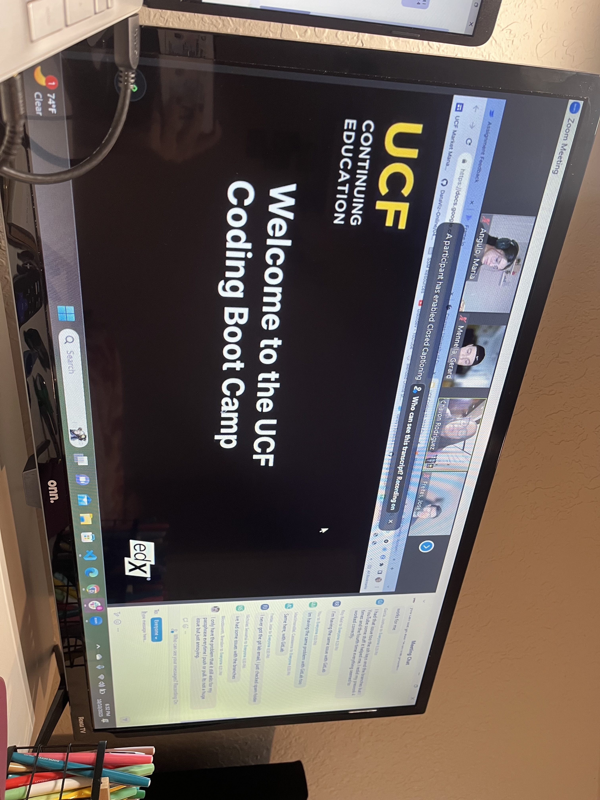
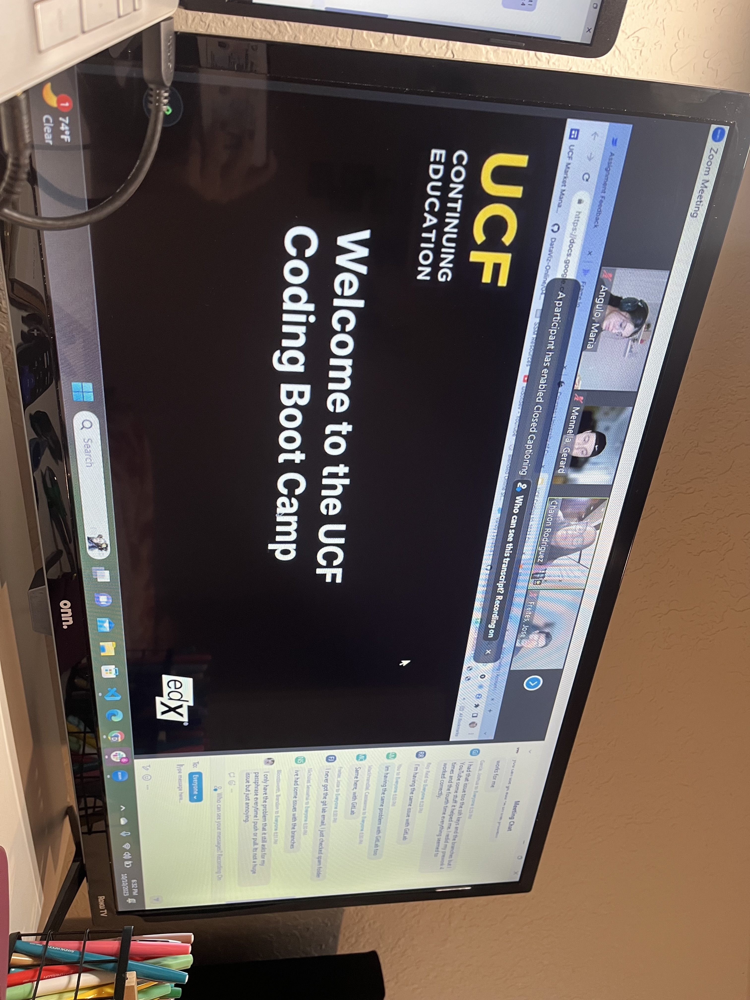

About ME
As a child I thought that I had my life structured already, based on 3 simple things:
Getting graduated from High School, beggining at the University and getting a job right
after that. Everything seemed so easy for a child living in Venezuela where everything that
she had to worry about was studying.
Moving to another country at my 17 years just made me realize that there were more breakpoints inside that
life's structure that I'd idealized for myself: stabilize myself by my own, learning the native language
of the country that I started building my life in, getting numerous jobs at a time and trying to figure out
how to re-structure the life that I've been planning until then.
For a person that was not good at computers at all was scary thinking about taking this path, far more when
the degree that you were planning to study doesn't have ANYTHING to do with computers but doesn't offer you
a job path convenient for you either; but you only get knowledge and experience until you push yourself to do it,
and that's how I started a year and a half ago taking some online courses about programming basics (HTML, CSS,
JavaScript and React JS) meanwhile I was building my savings to take it in a professional way. So here I am.
.png) 

Soft Skills
Development Experience